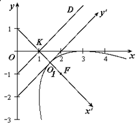

П 9 № 8
Составить уравнение параболы, если ее фокус находится в точке
и уравнение директрисы .
РЕШЕНИЕ
Пусть в некоторой системе координат  парабола
имеет канонический вид .
парабола
имеет канонический вид .
парабола
имеет канонический вид . Если прямая является ее
директрисой, то оси системы координат параллельны
директрисе.
параллельны
директрисе.Координаты вершины параболы, совпадающей с новым началом
координат  , найдем как середину отрезка нормали
к директрисе
, найдем как середину отрезка нормали
к директрисе  , проходящей через фокус.
, проходящей через фокус.
, найдем как середину отрезка нормали
к директрисе , проходящей через фокус.
Итак, ось описывается
уравнением , .
Откуда и : .
Координаты точки  пересечения
директрисы и оси находим из условия:
пересечения
директрисы и оси находим из условия:
пересечения
директрисы и оси находим из условия:Координаты нового начала координат  :
:
:Оси новой системы координат повернуты относительно старой на
угол .
Найдем
Итак, уравнение параболы в старой системе координат получим,
если подвергнем уравнение параболы  преобразованию
(см. формулу (5) п.4.3):
преобразованию
(см. формулу (5) п.4.3):
преобразованию
(см. формулу (5) п.4.3):откуда искомое уравнение параболы имеет вид: .